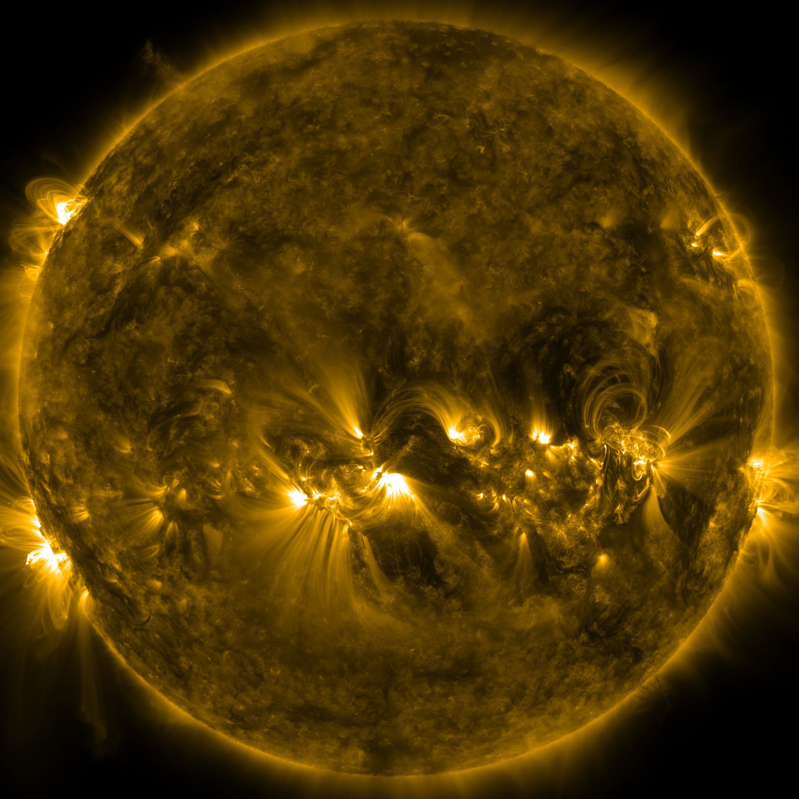

About me
I am a DAAD and IMPRS Ph.D. fellowship holder working in the solar department at the Max Planck Institute for Solar System Research (MPS). My advisors are Dr. Andreas Lagg and Prof. Sami Solanki. My work is part of the Solar Lower Atmosphere and Magnetism group (SLAM), which is an interdisciplinary research group that gathers expertises in instrumentation and theory development, as well as, observational analysis.
My research focuses on understanding the solar magnetism in the solar photosphere and chromosphere. We analyze spectropolarimetric data from the optical window to the IR to infer physical conditions of the solar atmosphere. We examine UV, and EUV filtergrams to collect information about the plasma conditions in the Transition Region and the Corona.
As educational background, I completed my MSc. in Astronomy in 2016 at the Universidad Nacional de Colombia (UNAL) under the supervision of Dr. Lucia Kleint and Prof. Benjamin Calvo-Mozo. We studied the behavior of the photospheric magnetic field during 75 solar flares (paper). I obtained a B.Sc. in Physics at UNAL under the supervision of Dr. Juan Carlos Martínez-Oliveros and Prof. Benjamin Calvo-Mozo. My Diploma thesis was a study of White-light flares and the Backwarming model during these events.
During these years, I have gathered experience in the analysis of ground-based observations (e.g., GREGOR), and spaceborne (e.g, SDO, HINODE, RHESSI) observations, as well as, inversion techniques of polarized light to infer the conditions of the solar atmosphere (e.g., Helix+).


{kind=link}
{kind=link}
Publications

Seminars & Talks

Supervision

Outreach
